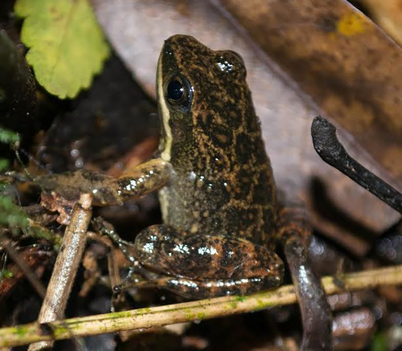
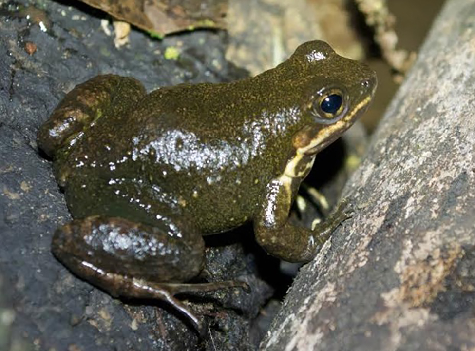
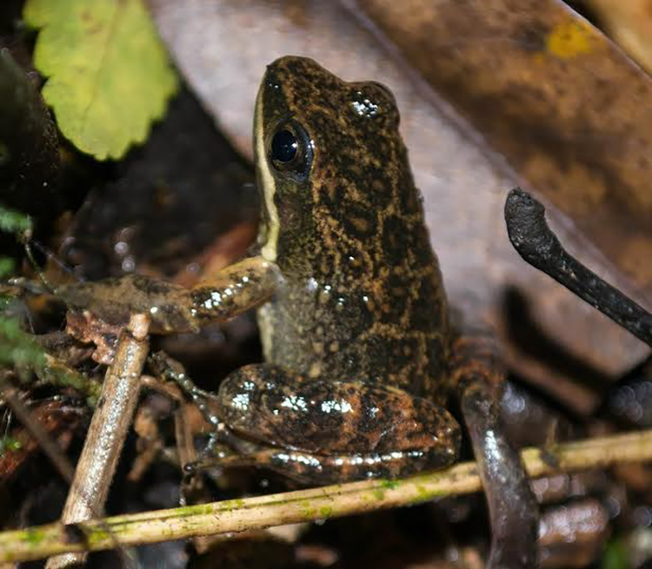
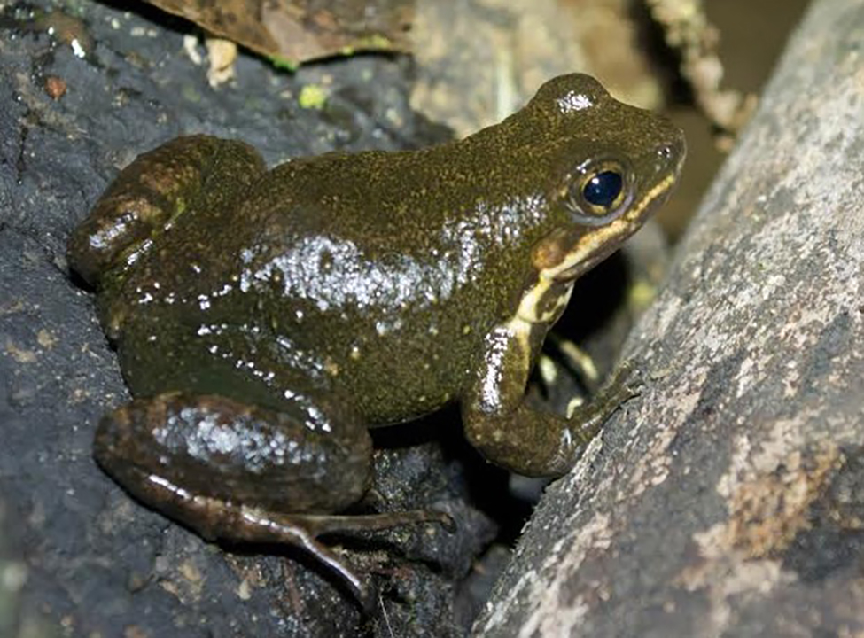

É uma rã pequena, dorso liso, com coloração castanho-escuro a castanho-acinzentado, com algumas manchas negras. Vive ao longo de pequenos rios e riachos rochosos em áreas florestadas. É uma espécie relativamente comum, que ocorre no sul do Brasil, além da Argentina e Paraguai.
Sua alimentação consiste de lesmas, formigas, larvas de besouros e de moscas, além de aranhas. Foi avaliada como uma espécie quase ameaçada de extinção, pois em muitas áreas, onde anteriormente era comum, sofre com alterações como desmatamento e avanço da agricultura. Em expedições recentes ainda tem sido encontrada em áreas protegidas.
 


